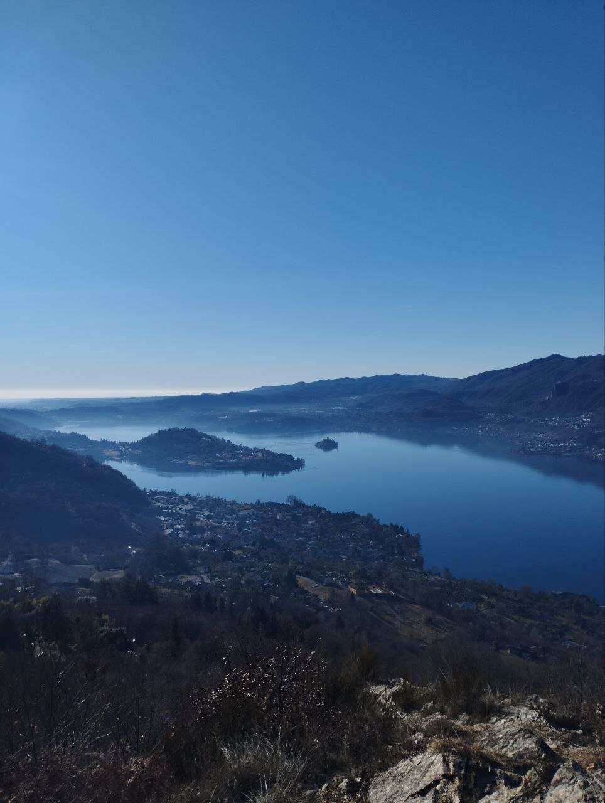
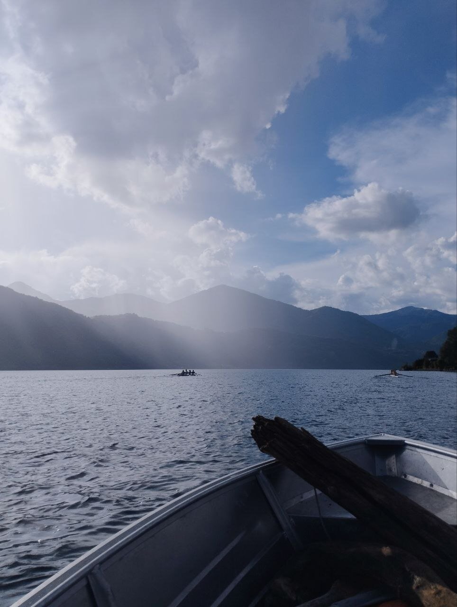
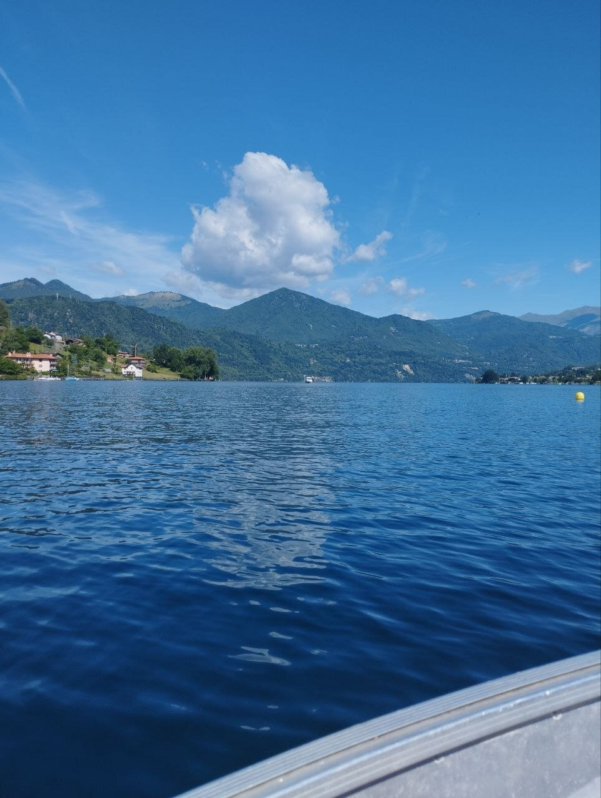
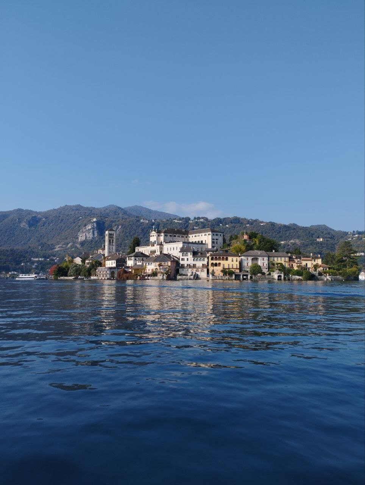
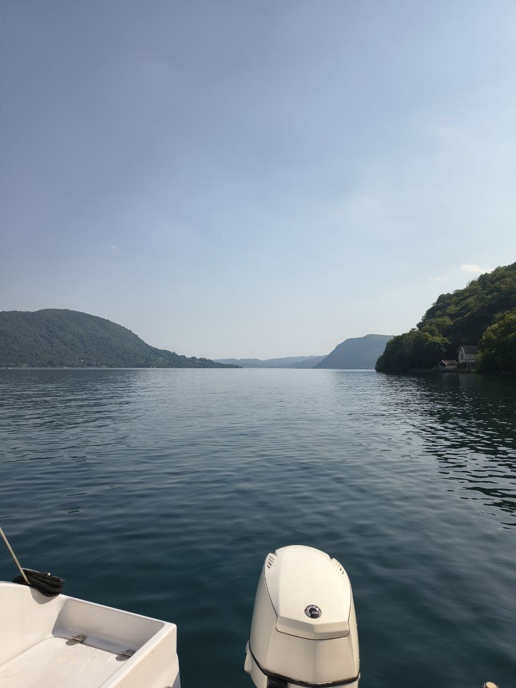

Il lago che ho ripreso a guardare non è sempre stato questo. Negli anni Venti una fabbrica tessile a Gozzano iniziò a scaricare rame e ammoniaca nelle sue acque: in due anni il plancton sparì, e con lui i pesci. Nel 1983 il Lago d'Orta veniva dichiarato il lago più acido del pianeta — non solo inquinato: morto.

Poi, tra il 1989 e il 1990, un intervento di risanamento su scala mai tentata prima ha immesso carbonati nelle acque per neutralizzarne l'acidità. Non è stata una guarigione immediata: è stato l'inizio di una rinascita lenta, che continua ancora oggi, decennio dopo decennio.

Ho lavorato per anni in contesti turistici locali a raccontare questo lago a chi non lo conosceva. E ci vado in barca fin da quando ero piccolo: c'è un silenzio, su quell'acqua, che non assomiglia a nessun altro — non vuoto, ma pieno di tutto quello che il lago ha attraversato per tornare a essere così bello. Le montagne capovolte nel riflesso, l'Isola di San Giulio che sembra galleggiare, il rumore dei remi come unico suono per chilometri.

Oechslin Outdoor nasce da questo. Non da un lago qualsiasi, ma da uno che ha dovuto reimparare a essere vivo.
